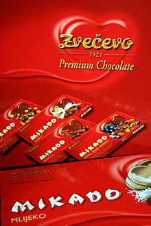

Zvečevo
Još jedna tvornica čokolade hrvatskog podrijetla, lokacijom smještena u gradu Požega.
Njihova povijest kreće 20. listopada 1921. kada je osnovana tvornica Stock cognac Medicinal, koja je danas poznata pod imenom Zvečevo d.d. Godine 1934. švicarska tvrtka Nestlé tvrtci nudi ugovor o najmu postrojenja za proizvodnju čokolade i bombona na razdoblje od 10 godina, kako izvorno piše na njihovoj stranici.
Godine 1936. ponuda je odobrena, a deset godina kasnije proizvodnja se nastavlja u nacionaliziranoj tvornici. 1951.godine tvrtka mijenja ime u Zvečevo, a 1958.godine pripaja se mljekara koja je do tada poslovala pod imenom Slavonka. Kada su došle 60-e godine, Zvečevo je napustio proizvodnju sokova i brašna, te se fokusira na proizvodnju kakao proizvoda, jakih alkoholnih pića i preradu mlijeka u prah.
U nadolazećim godinama uloženo je u modernizaciju postrojenja i povećanju kapaciteta kako bi povećali produktivnost. Također, ugovor o dugogodišnjoj suradnji koji su skolopili sa tvrtkom Nestlé im je omogućio, ne samo dobar plasman na domaćem tržištu već i ulazak na inozemno tržište.
Kao njihove najpoznatije čokoladne proizvode možemo navesti Mikado, Braco i Seka, Mond i Super.
Detaljne informacije mogu se naći na web-stranici Zvečeva.